Decision 1
Sell the benefit before asking for anything.
Benefits first, then a phone number, then a role.
DelFin by Delhivery · 0→1 fintechB2B
I led design for DelFin, Delhivery's new app that lets truck owners buy and run FASTag and GPS on their own.
View presentationOverview
Funnels from Google Analytics, 1–7 Oct 2026.
Context
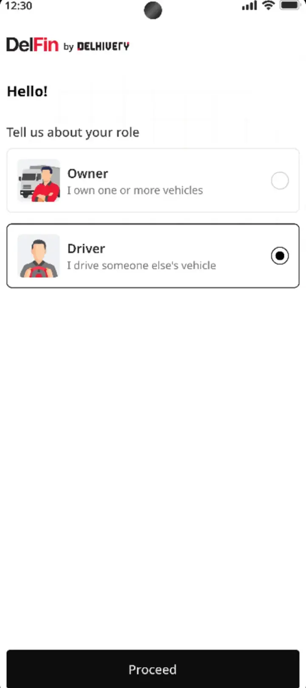
Problem
Platform
Two banks, two wallet models. The owner only sees my truck, my balance, what needs attention.
Journey
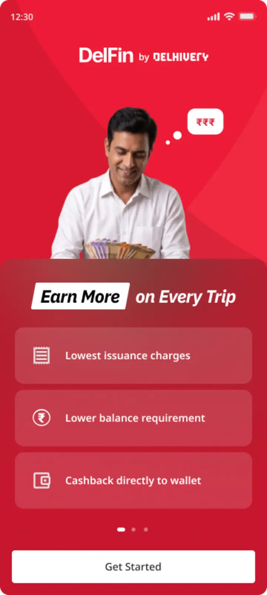
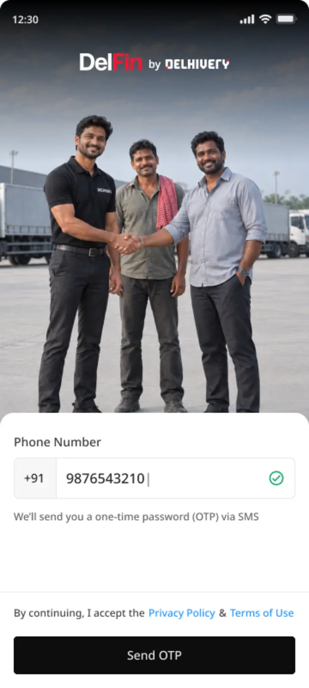
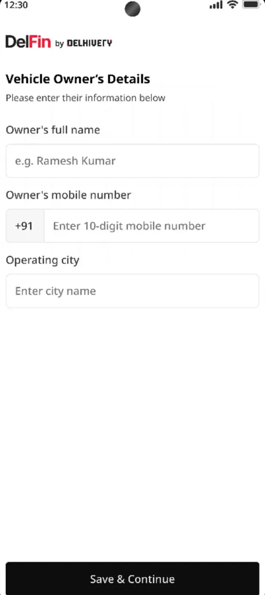
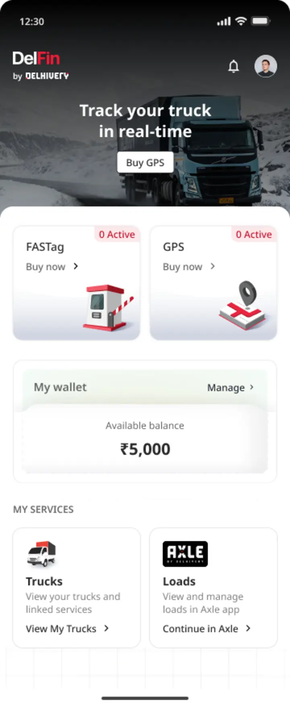
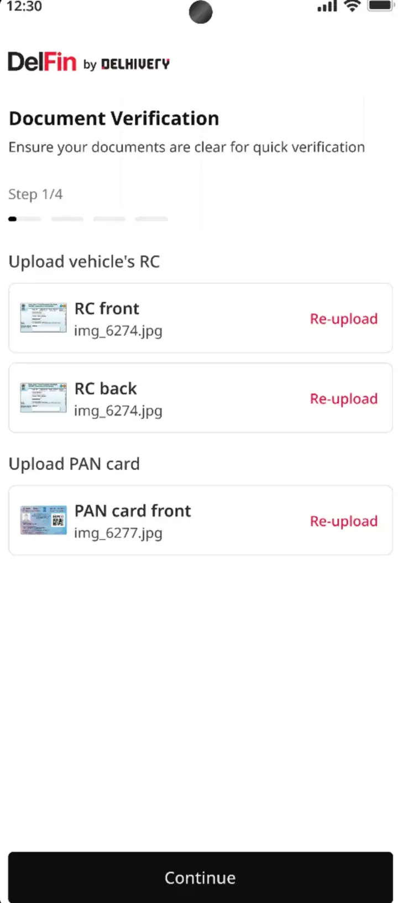
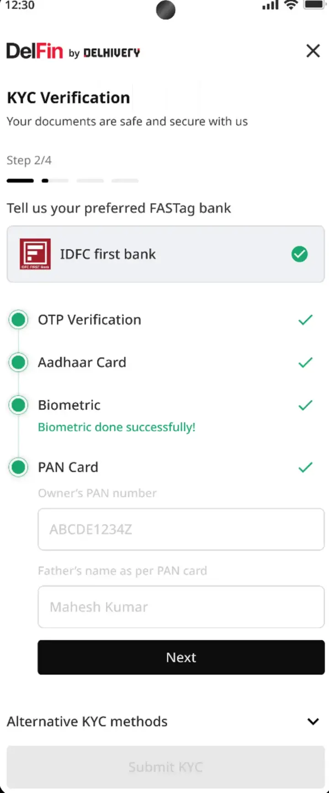
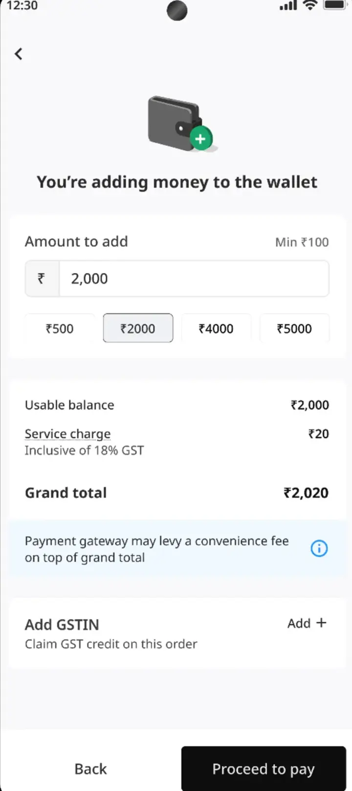
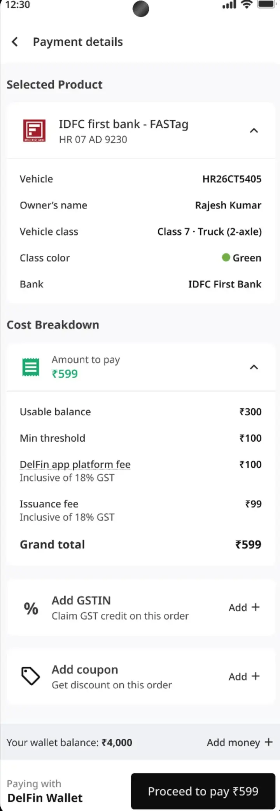
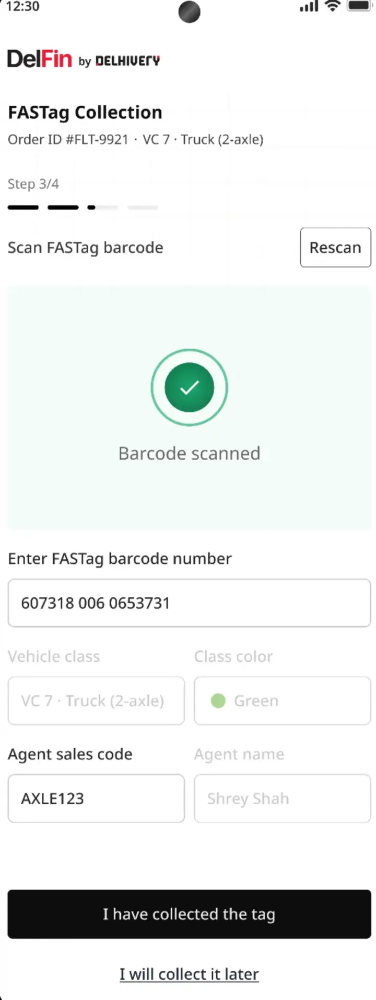
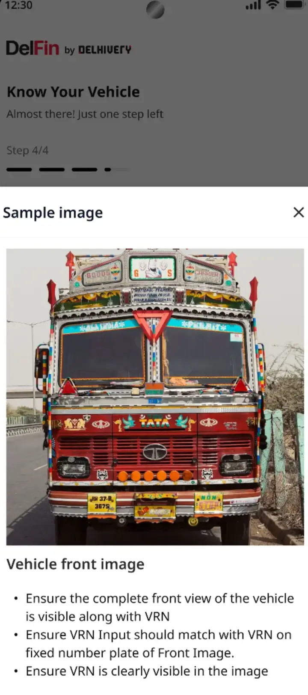
Decisions
Benefits first, then a phone number, then a role.
Pending actions first, the shop second.
Every truck gets a tracker it can resume.
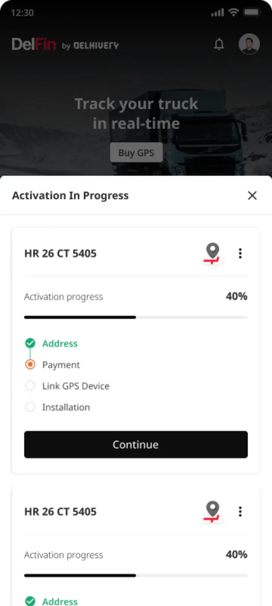
Name the amount and where it goes.
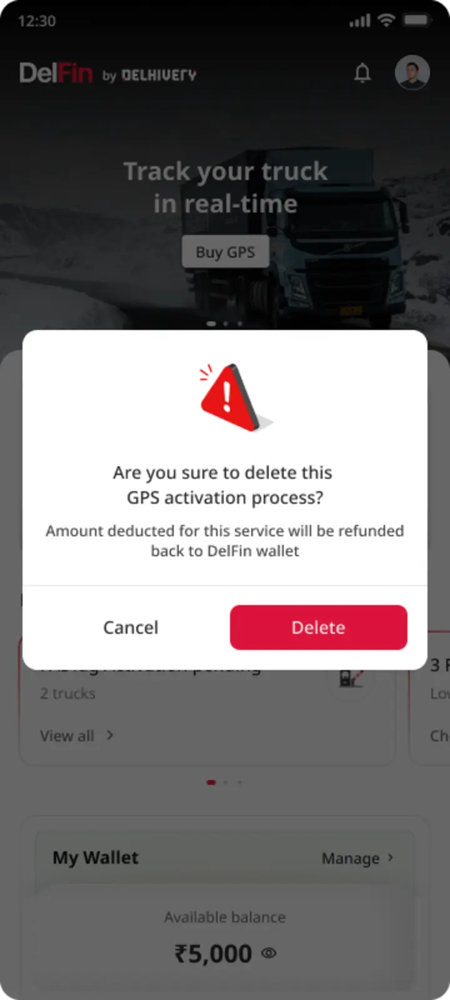
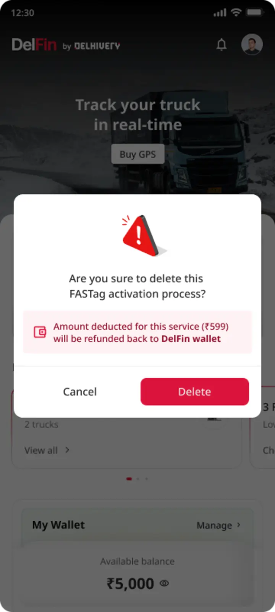
After buying
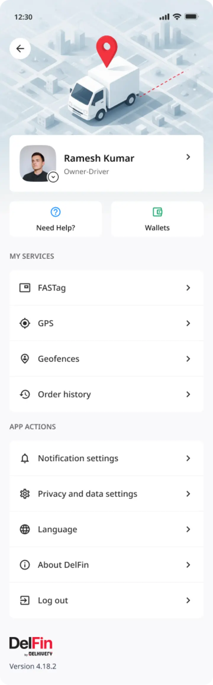
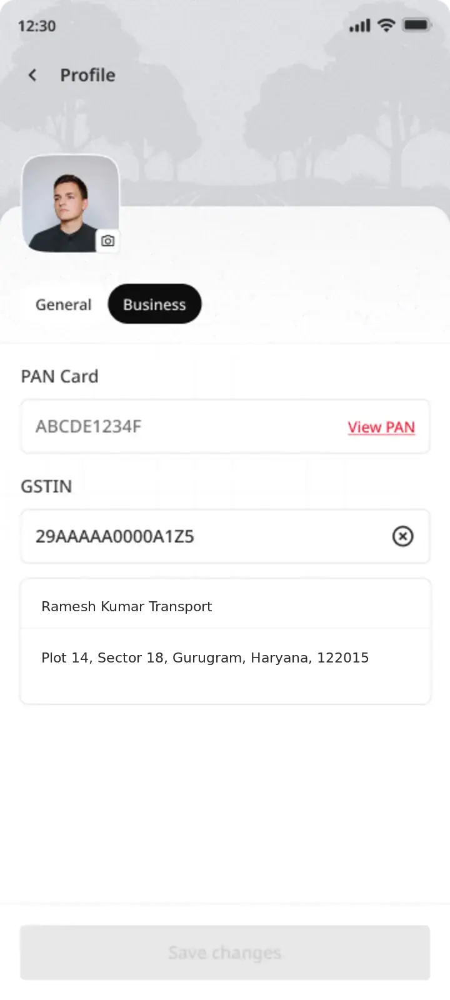
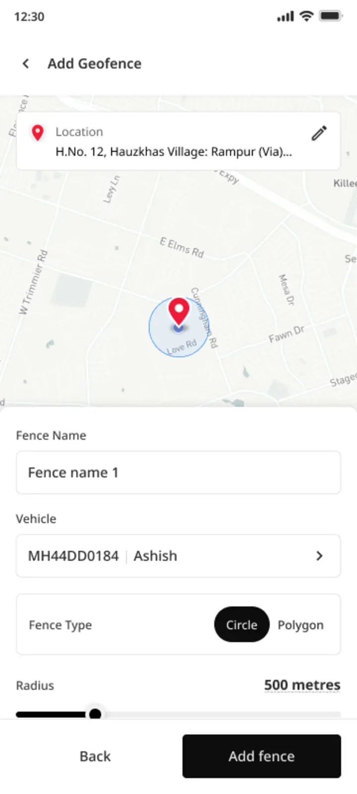
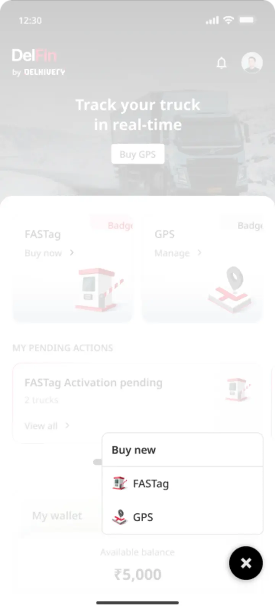
Impact
Google Analytics funnels, 1–7 Oct 2026.
What's next
OTP straight into setup.
One-tap recharge from home.
Claim 18% input credit.
Refunds in under 2 minutes.
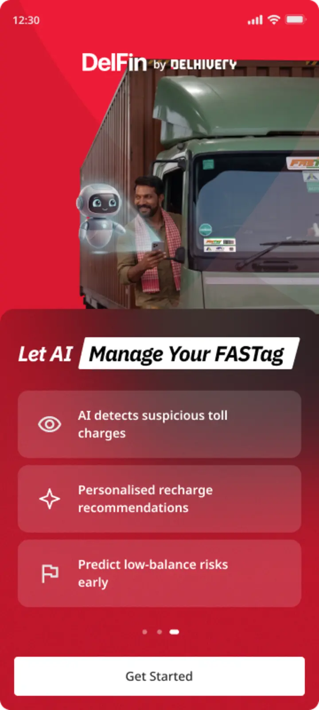
Reflection
The shared layer let GPS ship faster.
Owners never see the bank split.
Funnels picked the next quarter.
Super easy to use.
Simple, fast and easy to use.
Great app for truck owners.
Most user friendly FASTag app.
Early Play Store reviews after launch.
Three swipeable cards say what owners get: lower charges, no toll surprises, cashback. Then a phone number, then a role. Nothing else until it's needed.
Why: partners were signing up without knowing what DelFin was for.
Active counts on each service, then pending actions ("FASTag activation pending · 2 trucks"), then the wallet. New users see the buy cards; returning users see their trucks.
Why: owners came back to check status, not to browse.
Each truck gets a tracker: six steps for FASTag, four for GPS, with the current step marked. A day-long KYC or installation resumes where it stopped.
Why: handover and installation happen in the field, often hours later.
Cancelling an activation first said "the amount will be refunded". The next version names the amount and where it goes, in a highlighted line: ₹599 back to your DelFin wallet.
Why: vague refund copy made owners call support to confirm.
Partners signed up without knowing what DelFin offered; owners and drivers got the same setup.
Nobody could see where a tag was, or that it needed action, before reaching a toll.
Wallet balance, fees and refunds were unclear, so owners hesitated to pay in-app.
Profile, GST details and invoices needed calls instead of a screen.
IDFC keeps a balance per tag. Axis pools every tag into one wallet. The app normalises both, so the owner only sees their truck, its balance and what needs attention.
Identity, vehicles, documents and the wallet sit under every service. FASTag proved the layer, GPS reused it, and fuel, insurance and credit plug in next.
The biggest leak. Next: carry people from OTP straight into setup, without a gap.
Only 359 of 964 who opened their tags reached recharge. Next: recharge in one tap from home.
GSTIN at payment with PAN auto-fetch, and bulk invoices, so owners claim 18% input credit.
Self-serve refunds in under two minutes, tracked from wallet history.
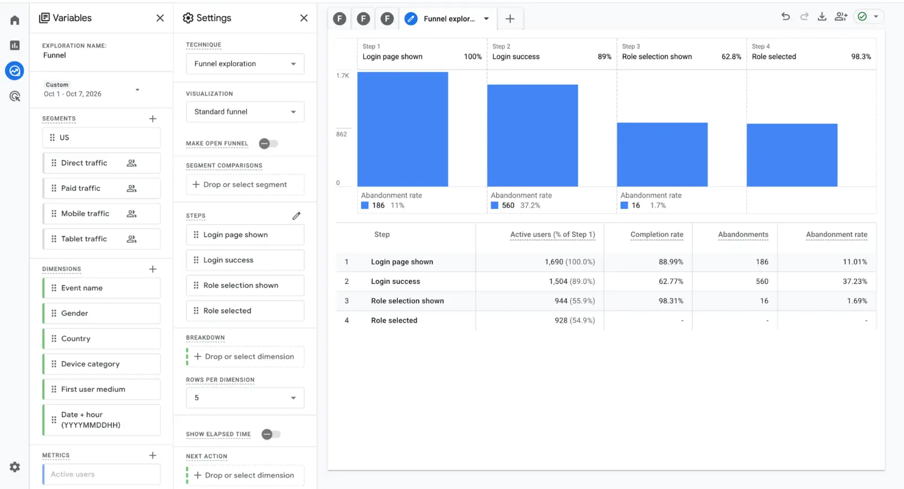